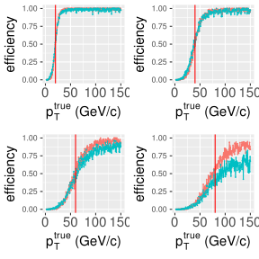
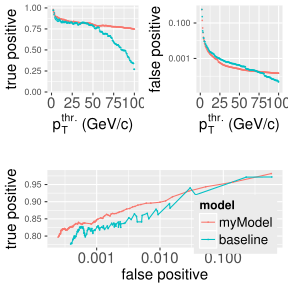
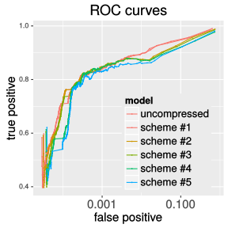
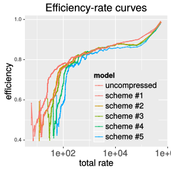
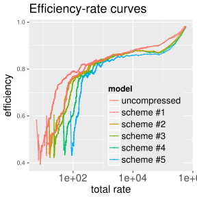
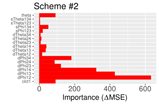
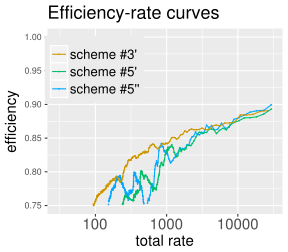
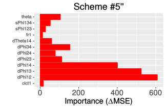

Metrics
- ROC curves
- Efficiency-rate curves
Scaling baseline EMTF model for proper comparison
Input compression
- several test schemes
- overal performance
- sources of impact on efficiency
Summary
Khristian Kotov
Metrics
Scaling baseline EMTF model for proper comparison
Input compression
Summary
ROC curves built with \(1/p_T ^3\) spectrum\(^*\) and turn-ons for "myModel"\(^{**}\) and EMTF ("baseline"):


\(^*\) any shape do well for qualitative comparison of the two models (i.e. relative behavior)
\(^{**}\) "myModel" is trained with \(\Delta\phi \times 6\), \(\Delta\theta \times 6\), \(CLCT \times 4\), \(FR \times 4\) (all full precision)
Like for ROCs, efficiency results from convolution of spectrum with turn-on above threshold
Fraction of fakes is replaced with absolute number of events with predicted pT > threshold
Comparing baseline and "myModel" using Andrew's zero bias ntuples:

Baseline model was originally scaled to have ~90% efficiency at any given threshold
Comparing baseline to itself for different scales shows apples-to-oranges problem:


Baseline put on "myModel" scale (turn-ons cross at 50%) by multiplying thresholds with \(1.43\)
As proposed earlier, I perform input transformations:
Following schemes (inspired by Andrew's talk) for number of bits for predictors are used:
| type | \(\theta\) | \(\Delta\phi_{12}\) | \(\Delta\phi_{23}\) | \(\Delta\phi_{34}\) | \(S^\phi_{12,23}\) | \(S^\phi_{12,34}\) | \(\Delta\theta_{12}\) | \(\Delta\theta_{23}\) | \(\Delta\theta_{34}\) | \(\Delta\theta_{13}\) | \(\Delta\theta_{14}\) | \(\Delta\theta_{24}\) | clct | fr |
|---|---|---|---|---|---|---|---|---|---|---|---|---|---|---|
| #1 | 10 | 10 | 10 | 10 | 1 | 1 | 5 | 5 | 5 | 5 | 5 | 5 | 4,4,4,4 | 1,1,1,1 |
| #2 | 10 | 7 | 5 | 5 | 1 | 1 | 5 | 5 | 5 | 5 | 5 | 5 | 4,4,4,4 | 1,1,1,1 |
| #3 | 5 | 7 | 5 | 5 | 1 | 1 | 0 | 0 | 0 | 0 | 3 | 0 | 4,4,4,4 | 1,1,1,1 |
| #4 | 5 | 7 | 5 | 5 | 1 | 1 | 0 | 0 | 0 | 0 | 3 | 0 | 4,0,0,0 | 1,0,0,0 |
| #5 | 5 | 7 | 5 | 5 | 1 | 1 | 0 | 0 | 0 | 0 | 2 | 0 | 2,0,0,0 | 0,0,0,0 |
(type #0 = "myModel" on previous slides, applies no compression; everything is mode=15 here)


Left part of the graphs (\(y\) < 0.8) corresponds to thresholds above ~50 GeV/\(c\) \(\rightarrow\) ignore it
Efficiency drop (0.85 < \(y\) < 0.95, scheme #1 \(\rightarrow\) #2) appears at \(\Delta\phi\) precision truncation
Schemes #2, #3, and #4 show almost identical performance for thresholds <50 GeV/$c$ ($y$>0.8)


| type | \(\theta\) | \(\Delta\phi_{12}\) | \(\Delta\phi_{23}\) | \(\Delta\phi_{34}\) | \(S^\phi_{12,23}\) | \(S^\phi_{12,34}\) | \(\Delta\theta_{12}\) | \(\Delta\theta_{23}\) | \(\Delta\theta_{34}\) | \(\Delta\theta_{13}\) | \(\Delta\theta_{14}\) | \(\Delta\theta_{24}\) | clct | fr |
|---|---|---|---|---|---|---|---|---|---|---|---|---|---|---|
| #1 | 10 | 10 | 10 | 10 | 1 | 1 | 5 | 5 | 5 | 5 | 5 | 5 | 4,4,4,4 | 1,1,1,1 |
| #4' | 5 | 10 | 5 | 5 | 1 | 1 | 0 | 0 | 0 | 0 | 3 | 0 | 4,0,0,0 | 1,0,0,0 |
| #5' | 5 | 10 | 5 | 5 | 1 | 1 | 0 | 0 | 0 | 0 | 2 | 0 | 2,0,0,0 | 0,0,0,0 |
| #5'' | 5 | 10 | 4 | 4 | 1 | 1 | 0 | 0 | 0 | 0 | 2 | 0 | 2,0,0,0 | 0,0,0,0 |

